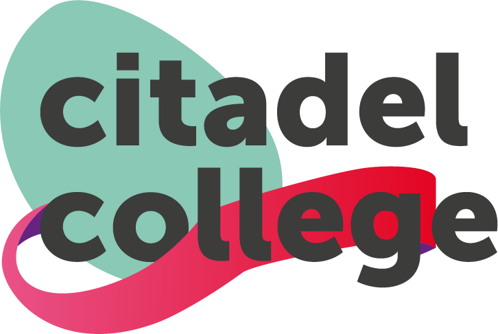
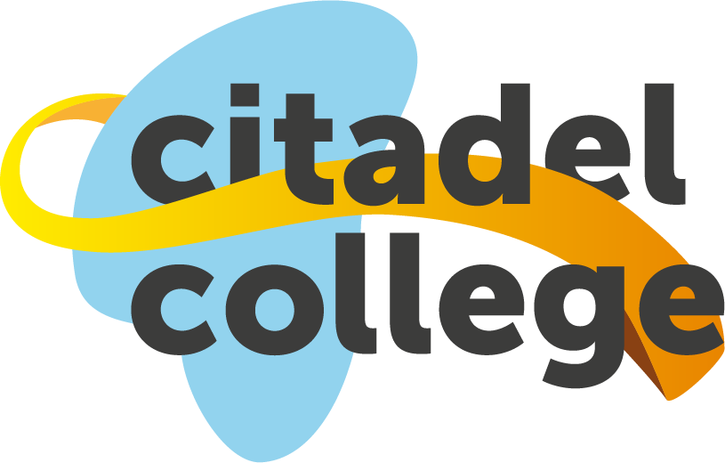
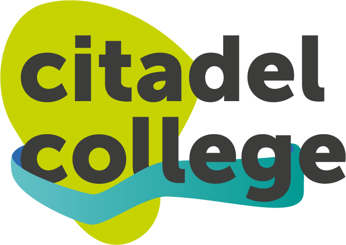

1
Welkomstscherm
Welkom bij de
Nulmeting
Digitale Geletterdheid · Leerjaar 1
Beheerder? Klik hier
2
Meerkeuzevraag

Informatievaardigheid
Welke actie is de beste eerste stap als je informatie zoekt voor een schoolopdracht?
A
Direct de eerste zoekresultaat openen en kopiëren
B
Zoekwoorden kiezen die passen bij je vraag
C
Alleen Wikipedia raadplegen
D
Je vraag letterlijk in de zoekbalk intypen
3
Simulatietaak: E-mail

bibliotheek@citadelcollege.nl
toevoegen...
Vraag over openingstijden
Beste bibliotheekmedewerker,
Ik zou graag willen weten wanneer de bibliotheek open is deze week. Kunt u mij de openingstijden doorgeven?
Met vriendelijke groet,
Leerling LJ1-042
Ik zou graag willen weten wanneer de bibliotheek open is deze week. Kunt u mij de openingstijden doorgeven?
Met vriendelijke groet,
Leerling LJ1-042
Taak 3/8
55%
4
Resultaten

72%
totaal
Goed gedaan!
Je hebt de nulmeting afgerond.
Je scoort bovengemiddeld op
informatievaardigheid.
Informatievaardigheid
84%
Digitale veiligheid
65%
Communicatie & samenwerken
78%
Probleemoplossend denken
60%